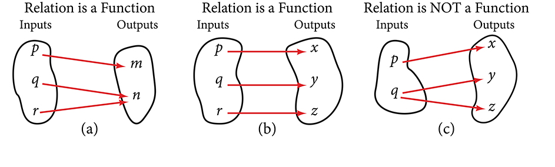

شروع کرن توں پہلاں: علامت نوں قدر نال جوڑو
ایہہ سبق اوہناں سکھن والیاں لئی اے جیہڑے سکول دا الجبرا پڑھ چکے نیں تے ہُن اردو یا انگریزی وچ اگلی پڑھائی ول جا رہے نیں۔ پہلاں متغیر تے عبارت دا فرق سمجھو، فیر ویکھو کہ اک قاعدہ اِن پُٹ نوں آؤٹ پُٹ نال کیویں جوڑدا اے۔ ایہہ ابتدائی پُل ساڈی اپنی وضاحت اے؛ اگلا حصہ ماخذ دا ترجمہ اے۔
متغیر اوہ علامت اے جیہدی قدر بدل سکدی اے۔ x اک متغیر اے۔ 2x + 3 اک جبری عبارت اے: ایتھے 2x دا مطلب 2 × x اے۔ ایس عبارت وچ برابری دا نشان نہیں۔ جے دو عبارتاں نوں برابری دے نشان نال جوڑیئے، تاں مساوات بن دی اے، جیویں 2x + 3 = 11۔
حل کیتی مثال: عبارت دی قدر کڈھو
جے x = 4 ہووے، تاں عبارت وچ ہر x دی تھاں 4 رکھو۔ پہلاں ضرب کرو تے فیر جمع:
2x + 3 = 2 × 4 + 3 = 8 + 3 = 11
جے قاعدے نوں f(x) = 2x + 3 لکھئے، تاں f(4) = 11 دا مطلب اے: اِن پُٹ 4 اُتے فنکشن دی آؤٹ پُٹ 11 اے۔ ایتھے f(4) دا مطلب f × 4 نہیں اے۔ منفی قدر رکھن ویلے قوساں نہ بھلّو: f(−2) = 2 × (−2) + 3 = −1۔
ترتیب وار جوڑی (4, 11) وچ اِن پُٹ پہلے تے آؤٹ پُٹ دوجے نمبر اُتے اے۔ پنجابی سطراں سجّے توں کھبے پڑھیاں جاندیاں نیں، پر ریاضی دیاں جوڑیاں تے فارمولے کھبے توں سجّے پڑھو۔ ایہہ ترتیب بدل کے (11, 4) لکھن نال ہور جوڑی بن جاندی اے۔ چھوٹی سکرین اُتے لمّا فارمولا پورا ویکھن لئی اوہدے خانے نوں پاسے سرکاؤ۔ کی بورڈ نال خانے اُتے فوکس لے آؤ تے تیر والے بٹن ورتو۔
ماخذ دا ترجمہ: OpenStax Precalculus 2e, §1.1 دا ابتدائی حصہ؛ پورے حصے دا ترجمہ نہیں۔
ہوائی جہاز جدوں اُڈان دے شروع والے تھاں توں دور جاندا اے، اوہدی اُچائی بدل دی اے۔ ودھدے ہوئے بچے دا وزن وقت نال ودھدا اے۔ ہر مثال وچ اک مقدار دوجی مقدار اُتے منحصر اے۔ دوہاں مقداراں دا آپس وچ رشتہ اے، جیہنوں اسیں بیان کر سکدے آں، پرکھ سکدے آں تے اگوں دا اندازہ لاؤن لئی ورت سکدے آں۔ ایس حصے وچ اسیں ایہو جیہے رشتیاں نوں پرکھاں گے۔
ویکھنا کہ کوئی تعلق فنکشن اے یا نہیں
تعلق ترتیب وار جوڑیاں دا اک سیٹ ہوندا اے۔ ساریاں ترتیب وار جوڑیاں دے پہلے جزواں دا سیٹ ڈومین تے دوجے جزواں دا سیٹ رینج اکھواندا اے۔ تھلے دِتے ترتیب وار جوڑیاں دے سیٹ نوں ویکھو۔ ہر جوڑی دا پہلا عدد، پہلے پنج قدرتی اعداد وچوں اک اے۔ ہر جوڑی دا دوجا عدد، پہلے عدد دا دُگنا اے۔
ڈومین اے۔ رینج اے۔
چیتے رکھو کہ ڈومین دی ہر قدر نوں اِن پُٹ دی قدر، یا آزاد متغیر وی آکھیا جاندا اے۔ ایہنوں اکثر انگریزی دے چھوٹے حرف نال لکھدے نیں۔ رینج دی ہر قدر نوں آؤٹ پُٹ دی قدر، یا تابع متغیر وی آکھیا جاندا اے۔ ایہنوں اکثر چھوٹے حرف نال لکھدے نیں۔
فنکشن اوہ تعلق اے جیہڑا ڈومین دی ہر قدر نال رینج دی اِکّو قدر جوڑدا اے۔ دوجے لفظاں وچ، جوڑیاں دی فہرست وچ x دیاں قدراں نہیں دہرائیاں جاندیاں۔ ساڈی مثال وچ پہلے پنج قدرتی اعداد نوں اوہناں دے دُگنے اعداد نال جوڑیا گیا اے۔ ایہہ تعلق فنکشن اے، کیوں جے ڈومین دا ہر رکن، رینج دے ٹھیک اک رکن نال جُڑیا اے۔
ہُن ترتیب وار جوڑیاں دا اوہ سیٹ ویکھئے جیہڑا «جفت» تے «طاق» دے لفظاں نوں پہلے پنج قدرتی اعداد نال جوڑدا اے۔ ایہہ اِنج لکھیا جاوے گا:
ویکھو کہ ڈومین دا ہر رکن، رینج دے ٹھیک اک رکن نال نہیں جُڑیا۔ مثال لئی، لفظ «طاق» رینج دیاں تن قدراں نال جُڑیا اے، تے لفظ «جفت» رینج دیاں دو قدراں نال جُڑیا اے۔ ایہہ فنکشن دی تعریف اُتے پورا نہیں اُتردا، ایس لئی ایہہ تعلق فنکشن نہیں اے۔
شکل 1.1.1 وچ فنکشن ہون والے تے فنکشن نہ ہون والے تعلقاں دا موازنہ کیتا گیا اے۔

چھوٹی سکرین اُتے پوری شکل ویکھن لئی پاسے سرکاؤ، یا اصل شکل وکھری کھولو۔
{kind=link}
سمجھ دی پڑتال تے مشق
اصل شکل دے انگریزی لفظاں دی کُنجی: Inputs = اِن پُٹ، Outputs = آؤٹ پُٹ، Relation is a Function = تعلق فنکشن اے، تے NOT = نہیں۔ شکل جان بُجھ کے اصل صورت وچ رکھی اے تاں جے انگریزی نال وی واقفیت ہووے۔
فارمولیاں وچ اصل انگریزی لفظ قائم نیں: odd دا مطلب طاق تے even دا مطلب جفت اے۔ جوڑی دے دو حصیاں دی ترتیب نوں لفظ دی زبان نال نہ رلاؤ۔
- قاعدہ f(x) = 2x + 3 ورت کے f(0) تے f(5) کڈھو۔
- تعلق {(1, 4), (2, 4), (3, 7)} دا ڈومین تے رینج لکھو۔ کی ایہہ فنکشن اے؟ وجہ وی دسو۔
- تعلق {(1, 2), (1, 3), (2, 4)} فنکشن کیوں نہیں اے؟
- ماخذ دے دُگنا کرن والے تعلق دیاں ساریاں جوڑیاں اُلٹ دیو۔ کی نواں تعلق فنکشن اے؟ نواں ڈومین وی لکھو۔
اپنے جواب پرکھو
- مشق 1: f(0) = 3 تے f(5) = 13۔ پہلے متغیر دی تھاں قدر رکھو، فیر ضرب تے جمع کرو۔
- مشق 2: ڈومین {1, 2, 3} تے رینج {4, 7} اے۔ ہاں، ایہہ فنکشن اے، کیوں جے ہر اِن پُٹ نال اِکّو آؤٹ پُٹ جُڑی اے۔ رینج دے سیٹ وچ 4 اک واری لکھنا کافی اے۔
- مشق 3: اِن پُٹ 1 نال آؤٹ پُٹ 2 تے 3 دوویں جُڑیاں نیں؛ ایس لئی ایہہ فنکشن نہیں اے۔
- مشق 4: ہاں۔ نواں تعلق {(2, 1), (4, 2), (6, 3), (8, 4), (10, 5)} اے۔ نواں ڈومین {2, 4, 6, 8, 10} اے۔ ہر اِن پُٹ نال ٹھیک اک آؤٹ پُٹ جُڑی اے۔ ہر فنکشن دیاں جوڑیاں اُلٹ کے لازمی فنکشن نہیں بن جاندا؛ اگلے سبق دی قیمتاں دی فہرست والی مثال ایہہ فرق وکھاوے گی۔
اگلا سبق: چیزاں تے قیمتاں۔ Example_01_01_01 وچ ویکھو: کی چیز دی قیمت چیز دا فنکشن اے، تے کی چیز قیمت دا فنکشن اے؟
تِن زباناں دی اصطلاحی کُنجی
| شاہ مکھی پنجابی | اردو | English |
|---|---|---|
| الجبرا | الجبرا | algebra |
| متغیر | متغیر | variable |
| جبری عبارت | جبری عبارت | algebraic expression |
| مساوات | مساوات | equation |
| قدر | قیمت / قدر | value |
| تعلق | تعلق | relation |
| ترتیب وار جوڑی | مرتب جوڑا | ordered pair |
| سیٹ | مجموعہ | set |
| رکن | رکن / عنصر | element |
| فنکشن | تفاعل / فنکشن | function |
| ڈومین | دائرۂ تعریف | domain |
| رینج | حاصل شدہ قدروں کا مجموعہ | range |
| اِن پُٹ | داخل کردہ قدر | input |
| آؤٹ پُٹ | حاصل ہونے والی قدر | output |
| آزاد متغیر | آزاد متغیر | independent variable |
| تابع متغیر | تابع متغیر | dependent variable |
| قدرتی عدد | قدرتی عدد | natural number |
| جفت | جفت | even |
| طاق | طاق | odd |
| ٹھیک اک | صرف ایک | exactly one |
| ثبوت | ثبوت | proof |
| ویکٹر | سمتیہ / ویکٹر | vector |
| خطی نقشہ | خطی تبدیلی | linear map |
| فنکشن دی علامتی لکھت | فنکشن کی علامتی صورت | function notation |
| فی صد گریڈ | فیصد نمبر | percent grade |
| گریڈ پوائنٹ اوسط | گریڈ پوائنٹ اوسط | grade point average (GPA) |
| درجہ | درجہ / مرتبہ | rank |
| قیمت | قیمت | price |
| مینو دی چیز | مینو کی شے | menu item |
| قاعدہ | قاعدہ | rule |
| قوساں | قوسین | parentheses |